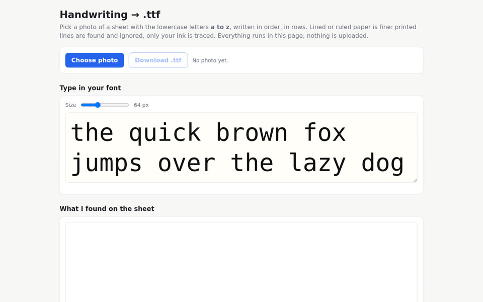

Photo of handwritten letters → a .ttf you can type with
Pick a photo of a to z written in rows and it traces each letter into a real font file, in the browser, no libraries. The version with one extra sentence about ruled lines read 7 of my 9 test sheets; the original only works on plain paper.
with the ruled-lines sentence (untouched)
The prompt
Make me a single index.html that turns a photo of my hand-drawn letters into a font I can actually type with. I pick the photo with a file input. The sheet has the lowercase letters a to z in order, in rows. Find each letter, trace its outline, and build a real .ttf font file in the browser, with no libraries or CDNs. Then load that font into the page, show a text box that types in it, and add a button to download the .ttf. The paper may be lined, with ruled or margin lines, so ignore printed lines and only trace the ink of the letters.